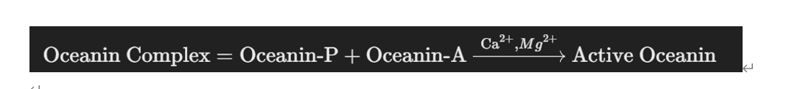

Oceanin Protein
Definition
Oceanin protein is a fictional, extremely powerful protein that grants all mermaid traits beyond what natural evolution alone could achieve. It is synthesized in both the liver and the bone marrow.
Conceptual Positioning
Oceanin is a cross-system reactive protein, responsible not only for mineral chelation and crystallization guidance but also for regulating neural transmission, immune protection, and skin metabolism. Therefore, its synthesis mechanism must possess:
- Strong metabolic capabilities (to synthesize complex domains)
- Immunological recognition and hematopoietic involvement (so that it can remain stable in the bloodstream)
- Wide yet precisely controlled tissue distribution (different concentrations in different parts of the body)
Synthesis Environment
Oceanin requires a high-pressure, mineral-rich environment (matching the ocean), which induces Oceanin to self-assemble structurally.
Further Info: Why Both Liver and Bone Marrow?
- Liver: The largest metabolic factory in the body, responsible for protein synthesis, detoxification, and mineral metabolism regulation.
- Bone Marrow: The core of the immune and hematopoietic systems, responsible for secreting cytokines, acute-phase proteins, complement factors, etc.
This combination aligns well with producing a complex, multifunctional protein like Oceanin.
Composition
- From the Liver: The primary form — Oceanin-P (Primary Form), a glycoprotein with multiple chelating groups.
- From the Bone Marrow: The activation fragment — Oceanin-A (Active Form), a short peptide that initiates crystallization processes.
Oceanin Complex Equation
A conceptual representation of how the Oceanin Complex forms and transitions to its active state in the presence of Ca2+ and Mg2+:
